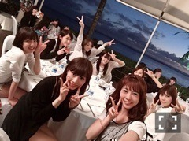

| 2016/08 02 Tue | 空がだんだん夏の空になっていく。(´>∀<｀)ゝ |
ちはるーむへようこそ！
空が夏だなーと最近思う。
また写真載せるね。
おさげしながら制服着てると
私は昭和風に早変わりします。
昭和顔なの。
(多分)
-------------------------♡
！！ChihAnswer！！
今日から名前も一緒に記載するよ〜♪
同じ質問だと割愛させていただくかも(> <)
ごめんね(> <)
 アストンヴィラあつひこさん
アストンヴィラあつひこさん
・長期の移動のバスや電車では何をしてますか？
→私は、寝るか
ブログのコメントを読むか
携帯の漫画や雑誌を読むか
昔の写真を見るか
テスト前だと勉強したりとか
ライブ前だとライブの動画をみたりとか
確認をしたりだとか
音楽を聴きながらぼーっとするか
です。笑
決まって何かするってことはないの( ;o; )
エナジー焼きそばさん
・真面目だとバカにされます。真面目ってダメなんですかね？
→真面目の何が悪いの！！！
と私はバカにした人を怒ります。
真面目って人には出来ないことや
物事をコツコツやり遂げられる
強い人だと思います。
カッコいいと思うよ。
きの子さん
・コーディネートを決める時とこから決めていますか？また、気をつけていることは何ですか？
→私は、今日この服をどうしても着たい！
って思う服を決めて、
それに合わせてコーディネートするよ！
あと、コーディネートに取り入れる色は
3色に抑えるようにてきるだけ気を付けてる！
小物の色を揃えたりね♪
バックや靴、アクセサリーなど！
しぃさん
・同性のファンってどう思いますか？
→とってもとっても嬉しいよ！！
女の子大好きだから(﹡ˆ ˆ﹡)
気兼ねせずに
会いに来てくれたら
応援してくれたら
凄い嬉しいな♡
ゆうとさん
・夏休みの宿題などは早く終わらせる方ですか？最後まで残りますか？
→昔から、大体最初は
よし！最初の1週間で終わらせて
あとは夏休み満喫するぞ〜！
って意気込んでるんだけど
絶対最後の方まで残る...
海斗16810さん
・KEYTALKとてつもなく好きで、ライブ行ってみてほしいです！
→(質問じゃないけど...)
私もKEYTALKさん好き！！！
今年の明大祭に
KEYTALKさんが来てくれるそうなんです！
行きたいけど...
見たいけど...
行けないだろうな(> <)
三角のサイさん
・1週間完全な休みが取れたら何をしたいですか？
→とにかく海外に行きたい！！
美術館とか博物館に行ったり
美味しい食べ物食べたり
景色の写真を撮ったり
したいな〜♡
ちなみにさ、乃木坂のマークの
三角マークをよく名前のあとにつけてる方を
見かけるのだけど、
それってどうやって打ったら出てくるの？
気になって仕方がないの。。
なべちさん
・乃木ののでみなみがバタフライをガチで泳ぎそうって言ってたけど、実際どうなの？
→実は私、バタフライできません。。
むしろ、バタフライどころか
平泳ぎもままならない...
クロールしか出来ません(> <)
ごめんね(> <)みなみ(> <)
期待を裏切って(> <)笑
先生さん
・いま一番行きたいところはどこですか？
→ウユニ塩湖！！
そこで綺麗な写真を撮りたい\( ˆoˆ )/
夢でもある！
あとはオーロラをみたい。
ギターおじさん♪さん
・欅の菜々香ちゃんがちーちゃんのことめちゃ美人って言ってたよ。
→(これも質問じゃないけど...)
えー！
それが本当だったら凄い嬉しい♡
今度写真撮れるかな〜♪
今日はここまで！！
質問してくれた皆さんありがとう♡♡
質問返せなかった皆さんごめんね(> <)
また返すから送ってね♪
-------------------------♡
♬ ChihaMusic
「みんながみんな英雄」AIさん
有名なあの曲を基にしてるから
とっても耳に残りやすいし
歌詞もとても好き！！
カラオケで歌いたいけど
高音が凄い高いから本当AIさんすごい(> <)

グアムの写真。
みんなでご飯〜♪
おやすみ\( ˆoˆ )/
斎藤ちはる
コメント(289)
2016/08/02 23:12